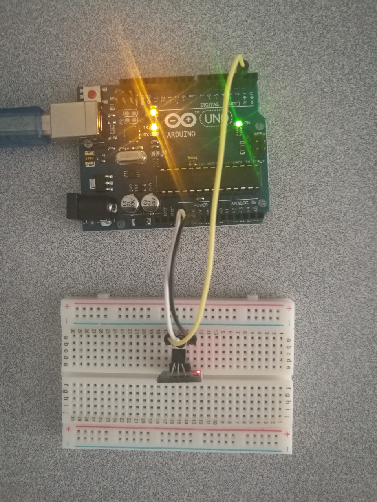

Temperature Sensor - DS18B20
Hardware Wiring

Sketch
// Include the libraries we need
#include <OneWire.h>
#include <DallasTemperature.h>
// Data wire is plugged into port 2 on the Arduino
#define ONE_WIRE_BUS 2
// Setup a oneWire instance to communicate with any OneWire devices (not just Maxim/Dallas temperature ICs)
OneWire oneWire(ONE_WIRE_BUS);
// Pass our oneWire reference to Dallas Temperature.
DallasTemperature sensors(&oneWire);
// arrays to hold device address
DeviceAddress insideThermometer;
/*
* Setup function. Here we do the basics
*/
void setup(void)
{
// start serial port
Serial.begin(9600);
Serial.println("Dallas Temperature IC Control Library Demo");
// locate devices on the bus
Serial.print("Locating devices...");
sensors.begin();
Serial.print("Found ");
Serial.print(sensors.getDeviceCount(), DEC);
Serial.println(" devices.");
// report parasite power requirements
Serial.print("Parasite power is: ");
if (sensors.isParasitePowerMode()) Serial.println("ON");
else Serial.println("OFF");
// Assign address manually. The addresses below will beed to be changed
// to valid device addresses on your bus. Device address can be retrieved
// by using either oneWire.search(deviceAddress) or individually via
// sensors.getAddress(deviceAddress, index)
// Note that you will need to use your specific address here
//insideThermometer = { 0x28, 0x1D, 0x39, 0x31, 0x2, 0x0, 0x0, 0xF0 };
// Method 1:
// Search for devices on the bus and assign based on an index. Ideally,
// you would do this to initially discover addresses on the bus and then
// use those addresses and manually assign them (see above) once you know
// the devices on your bus (and assuming they don't change).
if (!sensors.getAddress(insideThermometer, 0)) Serial.println("Unable to find address for Device 0");
// method 2: search()
// search() looks for the next device. Returns 1 if a new address has been
// returned. A zero might mean that the bus is shorted, there are no devices,
// or you have already retrieved all of them. It might be a good idea to
// check the CRC to make sure you didn't get garbage. The order is
// deterministic. You will always get the same devices in the same order
//
// Must be called before search()
//oneWire.reset_search();
// assigns the first address found to insideThermometer
//if (!oneWire.search(insideThermometer)) Serial.println("Unable to find address for insideThermometer");
// show the addresses we found on the bus
Serial.print("Device 0 Address: ");
printAddress(insideThermometer);
Serial.println();
// set the resolution to 9 bit (Each Dallas/Maxim device is capable of several different resolutions)
sensors.setResolution(insideThermometer, 9);
Serial.print("Device 0 Resolution: ");
Serial.print(sensors.getResolution(insideThermometer), DEC);
Serial.println();
}
// function to print the temperature for a device
void printTemperature(DeviceAddress deviceAddress)
{
// method 1 - slower
//Serial.print("Temp C: ");
//Serial.print(sensors.getTempC(deviceAddress));
//Serial.print(" Temp F: ");
//Serial.print(sensors.getTempF(deviceAddress)); // Makes a second call to getTempC and then converts to Fahrenheit
// method 2 - faster
float tempC = sensors.getTempC(deviceAddress);
Serial.print("Temp C: ");
Serial.print(tempC);
Serial.print(" Temp F: ");
Serial.println(DallasTemperature::toFahrenheit(tempC)); // Converts tempC to Fahrenheit
}
/*
* Main function. It will request the tempC from the sensors and display on Serial.
*/
void loop(void)
{
// call sensors.requestTemperatures() to issue a global temperature
// request to all devices on the bus
Serial.print("Requesting temperatures...");
sensors.requestTemperatures(); // Send the command to get temperatures
Serial.println("DONE");
// It responds almost immediately. Let's print out the data
printTemperature(insideThermometer); // Use a simple function to print out the data
delay(200);
}
// function to print a device address
void printAddress(DeviceAddress deviceAddress)
{
for (uint8_t i = 0; i < 8; i++)
{
if (deviceAddress[i] < 16) Serial.print("0");
Serial.print(deviceAddress[i], HEX);
}
}